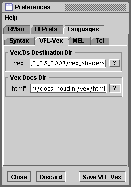

ONLINE DOCS
Double clicking on a command, with the ALT key pressed, should result in
Cutter's Web Browser displaying the specific documentation for the command.
SETTING THE PREFERENCES
On Windows the documentation is located at,
C:\Program Files\Side Effects Software\Houdini x.x.x\houdini\vex\html
Where Houdini x.x.x is a specific version of Houdini.
To point Cutter at the correct directory select the Preferences menu item from the
"Edit" menu on the main menu bar. Choose the "Languages"->"VFL-Vex" tab. The
button marked "?" will display a file dialog that will enable you locate the
"html" directory.
Click on the "Save VFL-Vex" button before closing the Preferences dialog.

Alternatively, double click on the "html" text field and a "line editor"
window will open. This will enable you to edit the path directly.